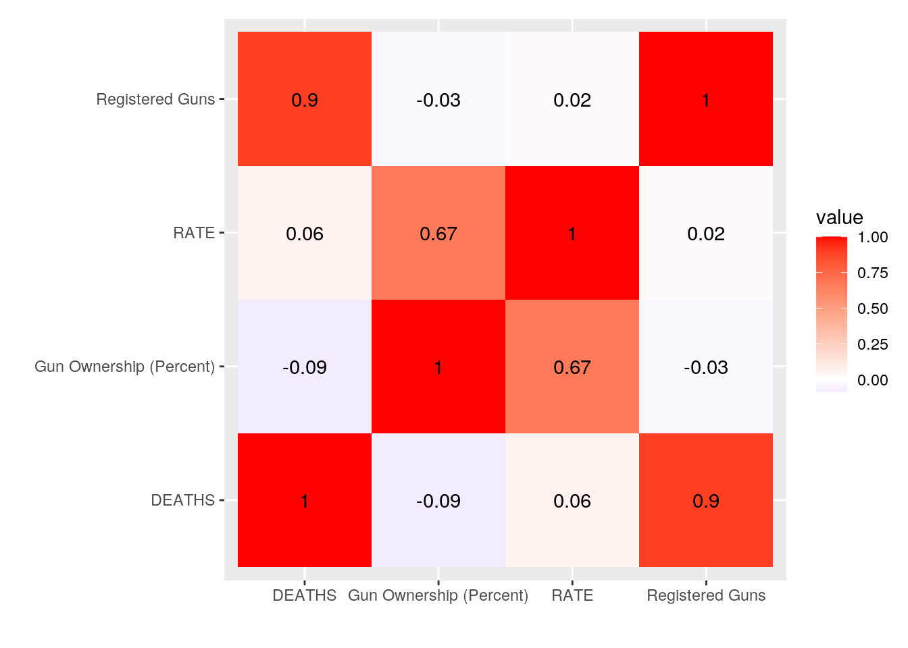
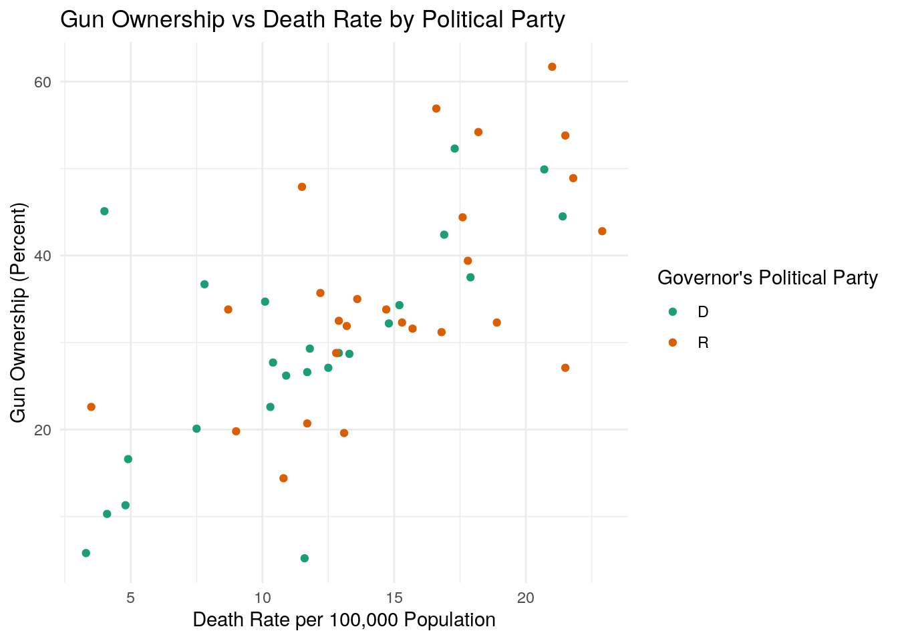
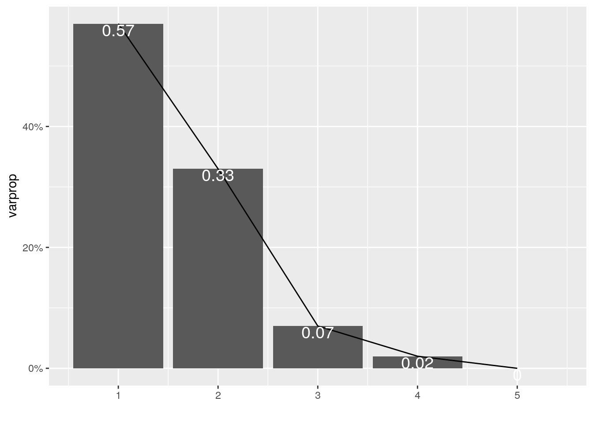
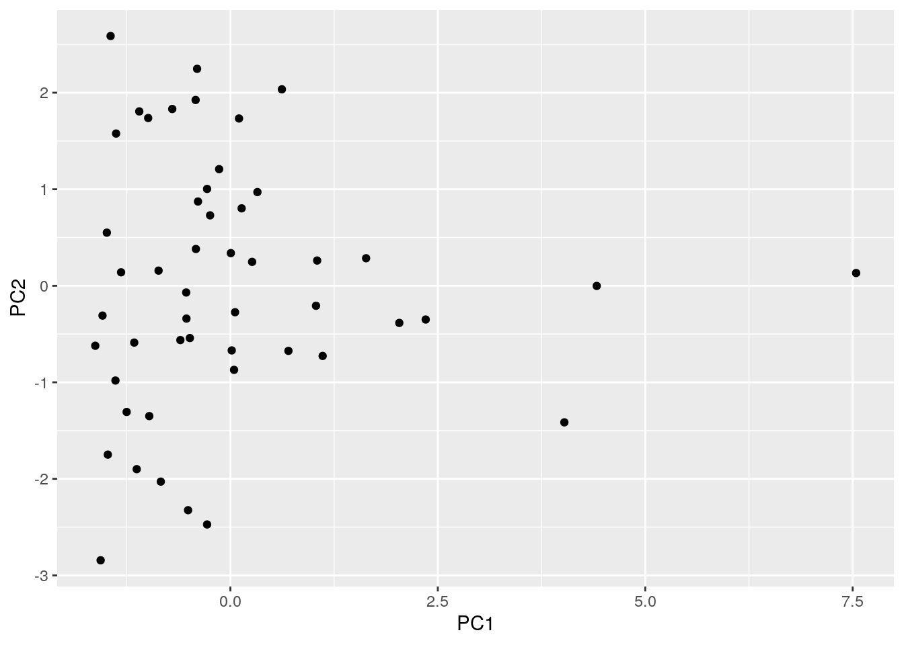

January 1, 0001
I decided to research the correlation between gun ownership and gun deaths in each state. I have titled the data sets GunMort, GovParty, and GunReg. In GunMort, each state, the number of their
total gun deaths by state, and the number of deaths by gun per 100,000 population by state is listed. This data was collected on the CDC website describing firearm mortality. In GovParty each state and the political party of the governor of each state is listed. This data was aquired on the Governors 2020 Roster
from the National Governors Association. In GunReg, each state, the total number of registered guns by state, and the percentage of adults who own guns is listed. This data was collected on statista.com in the Crime & Law Enforcement sub-section.
library(readr)
library(tidyverse)
GunMort <- read_csv("Firearm Mortality by State - Firearm Mortality by State.csv")
GunReg <- read_csv("GunRegistry by State - Sheet1 (1).csv")
GovParty <- read_csv("Governor's Party Data - Sheet1.csv")
Guns <- GunReg %>% left_join(GunMort) %>% left_join(GovParty)
GunsR <- Guns %>% filter(`Governor's Political Party` ==
"R")
GunsD <- Guns %>% filter(`Governor's Political Party` ==
"D")I decided to left join as all my data sets had the state names as variables and I would not have to drop any cell's information joining in this manner.
Guns %>% mutate(Deaths_per_gun = DEATHS/`Registered Guns`) %>%
select(Deaths_per_gun, STATE) %>% arrange(desc(Deaths_per_gun))## # A tibble: 50 x 2
## Deaths_per_gun STATE
## <dbl> <chr>
## 1 0.0203 DE
## 2 0.0157 MI
## 3 0.0149 MO
## 4 0.0130 MS
## 5 0.0106 VT
## 6 0.0101 TN
## 7 0.00990 NY
## 8 0.00936 IL
## 9 0.00913 ME
## 10 0.00901 SC
## 11 0.00884 OH
## 12 0.00851 LA
## 13 0.00824 WV
## 14 0.00813 KY
## 15 0.00807 CA
## 16 0.00800 OK
## 17 0.00795 RI
## 18 0.00792 MT
## 19 0.00789 CO
## 20 0.00781 NC
## 21 0.00779 KS
## 22 0.00772 IA
## 23 0.00755 AK
## 24 0.00751 WI
## 25 0.00743 GA
## 26 0.00731 IN
## 27 0.00695 OR
## 28 0.00681 HI
## 29 0.00675 WA
## 30 0.00671 FL
## 31 0.00647 MA
## 32 0.00632 AL
## 33 0.00615 NE
## 34 0.00609 PA
## 35 0.00568 NV
## 36 0.00560 AZ
## 37 0.00551 MD
## 38 0.00527 AR
## 39 0.00500 ID
## 40 0.00486 TX
## 41 0.00466 NJ
## 42 0.00451 ND
## 43 0.00443 MN
## 44 0.00425 UT
## 45 0.00414 NM
## 46 0.00376 SD
## 47 0.00290 VA
## 48 0.00261 NH
## 49 0.00248 CT
## 50 0.000925 WYGuns %>% filter(DEATHS > 1000) %>% select(-`Registered Guns`) %>%
arrange(RATE)## # A tibble: 14 x 5
## STATE `Gun Ownership (Percent)` RATE DEATHS `Governor's Political Party`
## <chr> <dbl> <dbl> <dbl> <chr>
## 1 CA 20.1 7.5 3040 D
## 2 IL 26.2 10.9 1382 D
## 3 VA 29.3 11.8 1035 D
## 4 TX 35.7 12.2 3522 R
## 5 PA 27.1 12.5 1654 D
## 6 FL 32.5 12.9 2902 R
## 7 MI 28.8 12.9 1310 D
## 8 OH 19.6 13.1 1555 R
## 9 NC 28.7 13.3 1416 D
## 10 AZ 32.3 15.3 1147 R
## 11 GA 31.6 15.7 1680 R
## 12 TN 39.4 17.8 1228 R
## 13 MO 27.1 21.5 1311 R
## 14 AL 48.9 21.8 1064 RGuns %>% summarize(median_RegGuns = median(`Registered Guns`),
mean_RegGuns = mean(`Registered Guns`), median_GOWN = median(`Gun Ownership (Percent)`),
mean_GOWN = mean(`Gun Ownership (Percent)`), sd_GOWN = sd(`Gun Ownership (Percent)`),
median_RATE = median(RATE), mean_RATE = mean(RATE),
sd_RATE = sd(RATE), median_DEATH = median(DEATHS),
mean_DEATH = mean(DEATHS), sd_DEATH = sd(DEATHS)) %>%
glimpse()## Rows: 1
## Columns: 11
## $ median_RegGuns <dbl> 91828.5
## $ mean_RegGuns <dbl> 119953.8
## $ median_GOWN <dbl> 32.25
## $ mean_GOWN <dbl> 32.58
## $ sd_GOWN <dbl> 13.0528
## $ median_RATE <dbl> 13
## $ mean_RATE <dbl> 13.388
## $ sd_RATE <dbl> 5.214487
## $ median_DEATH <dbl> 585.5
## $ mean_DEATH <dbl> 792.3
## $ sd_DEATH <dbl> 764.2139Guns %>% group_by(`Governor's Political Party`) %>%
summarize(median_RegGuns = median(`Registered Guns`),
mean_RegGuns = mean(`Registered Guns`), median_GOWN = median(`Gun Ownership (Percent)`),
mean_GOWN = mean(`Gun Ownership (Percent)`),
sd_GOWN = sd(`Gun Ownership (Percent)`), median_RATE = median(RATE),
mean_RATE = mean(RATE), sd_RATE = sd(RATE),
median_DEATH = median(DEATHS), mean_DEATH = mean(DEATHS),
sd_DEATH = sd(DEATHS), max_DEATH = max(DEATHS),
min_DEATH = min(DEATHS)) %>% glimpse()## Rows: 2
## Columns: 14
## $ `Governor's Political Party` <chr> "D", "R"
## $ median_RegGuns <dbl> 91968, 90855
## $ mean_RegGuns <dbl> 111561.1, 127701.0
## $ median_GOWN <dbl> 28.75, 33.15
## $ mean_GOWN <dbl> 28.99583, 35.88846
## $ sd_GOWN <dbl> 13.05805, 12.38339
## $ median_RATE <dbl> 11.65, 15.00
## $ mean_RATE <dbl> 11.50417, 15.12692
## $ sd_RATE <dbl> 5.186477, 4.689866
## $ median_DEATH <dbl> 574, 619
## $ mean_DEATH <dbl> 759.5417, 822.5385
## $ sd_DEATH <dbl> 669.0269, 854.9354
## $ max_DEATH <dbl> 3040, 3522
## $ min_DEATH <dbl> 37, 82To begin, I created a new variable measuring the number of firearm deaths per registered firearm in each state, using mutate. I then observed the states with the highest values, which was topped by Delaware with .02026 deaths per firearm. Next, I filtered to only see states with over 1000 firearm deaths, of which there are 14. I observed the data in order from the states with the lowest firearm death rate, which is California with 7.5 firearm deaths per 100,000 total population. For my summary statistics, I first found the overall median and mean for all four of my numerical variables, and found the standard deviation for the same variables. The standard deviation was relatively high compared to the median and mean values because of the large differences in state population size. I then found all of the same summary statistics while grouping the states by the political party of their governor. I also observed the minimum and maximum values for total firearm deaths for each group. Democratic states had a median gun ownership rate of 28.75% and a median death rate of 11.65 per 100,000. Republican states had a median gun ownership of 33.15% and a median death rate of 15 per 100,000.
Guns %>% select_if(is.numeric) %>% cor(use = "everything") %>%
as.data.frame() %>% rownames_to_column() %>% pivot_longer(-1) %>%
ggplot(aes(rowname, name, fill = value)) + geom_tile() +
geom_text(aes(label = round(value, 2))) + xlab("") +
ylab("") + coord_fixed() + scale_fill_gradient2(low = "blue",
high = "red") This correlation heatmap shows strong correlations between the number of registered guns in a state and the number of firearm deaths in a state and between the firearm death rate and the gun ownership rate in each state. The first correlation is likely due to the general fact that more populous states will have a higher number of registered firearms and a higher number of deaths than less populous states. This makes me believe that both of these correlate with state population, rather than specifically with each other. The second correlation, however, is ratios of population which controls for the previous problem with variable state population. The gun ownership percentage of a state could be a good indicator of the firearm death rate per 100,000 people. Additionally, I used pivot_longer to more effectively display the data.
ggplot(Guns, aes(RATE, `Gun Ownership (Percent)`),
stat = summary) + geom_point(aes(color = `Governor's Political Party`)) +
xlab("Death Rate per 100,000 Population") + scale_color_brewer(palette = "Dark2") +
labs(title = "Gun Ownership vs Death Rate by Political Party") +
theme_minimal() This graph shows the Death Rate of every state plotted agaisnt the gun ownership percent of those same state, sorted by the politcal identification of their governor. A very clear positive correlation can be observed as a relatively high gun ownership percent predisposes a state to a high death rate, or vice versa. Further, Republican states appear to be more likely to have higher values for these targeted variables.
colors1 <- (c("#56B4E9", "#E69F00"))
colors1 <- colors1[as.factor(Guns$`Governor's Political Party`)]
Guns$Party <- as.factor(Guns$`Governor's Political Party`)
Guns$`Registered Guns(x1000)` <- Guns$`Registered Guns`/1000
# this is a 3D scatterplot, and I could not get it
# to knit because of the error 'non-numeric
# argument to binary operator' for my DEATHS
# column. I tried for many ways of fixing this, and
# none of them worked. I made the variable a
# numeric several ways, reuploaded the data,
# changed the variable name, and none of it worked.
# So I just made the graph a comment to knit, but
# please run the code and it will produce a nice
# graph showing the DEATHS despite the error
# message.
# scatterplot3d::scatterplot3d(Guns$`Registered
# Guns(x1000)`, as.numeric(Guns$DEATHS), Guns$RATE,
# pch = 16, color = colors1, main = 'Gun
# Statistics', type = 'h', grid = TRUE, box =
# FALSE, xlab = 'Registered Firearms (x1000)', ylab
# = 'Total Deaths from Firearms', zlab = 'Death
# Rate per 100,000 Population')+ legend('bottom',
# 'Party', legend=levels(Guns$Party), col =
# c('#56B4E9', '#E69F00'), pch = 16, inset = -.25,
# xpd = TRUE, horiz = TRUE)
library("knitr")
library("png")
img1_path <- "3DScatterplot.png"
img1 <- readPNG(img1_path, native = TRUE, info = TRUE)
attr(img1, "info")## $dim
## [1] 700 432
##
## $bit.depth
## [1] 8
##
## $color.type
## [1] "RGB"
##
## $dpi
## [1] 95.9866 95.9866include_graphics(img1_path) This graph, titled "Gun Statistics" plots the total number of deaths, the amount of registered firearms divided by 1000, and the death rate of each state on a 3D scatterplot. The states are also colored by the political party of their governor. Texas, Florida, and California are the three data points seperated from the other states due to their high amount of deaths and registered firearms. Here, again, the Republican States stand out above the Democratic states for having a higer death rate. Regardless of political leaning, the vast majority of states are below 1500 firearm deaths per year.
This graph, titled "Gun Statistics" plots the total number of deaths, the amount of registered firearms divided by 1000, and the death rate of each state on a 3D scatterplot. The states are also colored by the political party of their governor. Texas, Florida, and California are the three data points seperated from the other states due to their high amount of deaths and registered firearms. Here, again, the Republican States stand out above the Democratic states for having a higer death rate. Regardless of political leaning, the vast majority of states are below 1500 firearm deaths per year.
GunNum <- Guns %>% select_if(is.numeric) %>% scale
rownames(GunNum) <- Guns$STATE
GunPCA <- princomp(GunNum)
names(GunPCA)## [1] "sdev" "loadings" "center" "scale" "n.obs" "scores" "call"summary(GunPCA, loadings = T)## Importance of components:
## Comp.1 Comp.2 Comp.3 Comp.4 Comp.5
## Standard deviation 1.6764305 1.2799544 0.57713540 0.34382039 0
## Proportion of Variance 0.5735549 0.3343435 0.06797659 0.02412499 0
## Cumulative Proportion 0.5735549 0.9078984 0.97587501 1.00000000 1
##
## Loadings:
## Comp.1 Comp.2 Comp.3 Comp.4 Comp.5
## Registered Guns 0.584 0.130 0.377 0.707
## Gun Ownership (Percent) 0.706 0.680 -0.194
## RATE 0.708 -0.681 0.188
## DEATHS 0.563 -0.201 -0.802
## Registered Guns(x1000) 0.584 0.130 0.377 -0.707eigval <- GunPCA$sdev^2
varprop = round(eigval/sum(eigval), 2)
ggplot() + geom_bar(aes(y = varprop, x = 1:5), stat = "identity") +
xlab("") + geom_path(aes(y = varprop, x = 1:5)) +
geom_text(aes(x = 1:5, y = varprop, label = round(varprop,
2)), vjust = 1, col = "white", size = 5) +
scale_y_continuous(breaks = seq(0, 0.6, 0.2), labels = scales::percent) +
scale_x_continuous(breaks = 1:10)
gunedf <- data.frame(PC1 = GunPCA$scores[, 1], PC2 = GunPCA$scores[,
2])
ggplot(gunedf, aes(PC1, PC2)) + geom_point()
GunPCA$scores %>% as.data.frame %>% cbind("STATE",
.) %>% top_n(5, Comp.1)## "STATE" Comp.1 Comp.2 Comp.3 Comp.4 Comp.5
## TX STATE 7.541659 0.132341126 0.83705903 0.6303919 -4.440892e-15
## FL STATE 4.415674 -0.001668181 0.14329552 -0.3791382 -2.442491e-15
## CA STATE 4.025226 -1.414568928 0.05211082 -0.8642842 -2.664535e-15
## VA STATE 2.354103 -0.349445939 0.45767212 1.1397869 -1.110223e-15
## PA STATE 2.035721 -0.384692520 -0.08645855 0.0422587 -1.332268e-15GunPCA$scores %>% as.data.frame %>% cbind("STATE",
.) %>% top_n(5, wt = desc(Comp.1))## "STATE" Comp.1 Comp.2 Comp.3 Comp.4 Comp.5
## ND STATE -1.489039 0.5504711 1.0243354 -0.1515942 1.221245e-15
## HI STATE -1.628671 -0.6211051 1.8432308 -0.4135755 1.110223e-15
## VT STATE -1.541486 -0.3087753 -0.1624816 0.1159861 9.992007e-16
## DE STATE -1.477264 -1.7489240 -1.2459585 0.3837523 5.551115e-16
## RI STATE -1.563883 -2.8435086 -0.1137086 0.1460260 5.551115e-16GunPCA$scores %>% as.data.frame %>% cbind("STATE",
.) %>% top_n(5, Comp.2)## "STATE" Comp.1 Comp.2 Comp.3 Comp.4 Comp.5
## AL STATE 0.6205875 2.035078 -0.22160326 0.06033866 -1.110223e-16
## WY STATE -0.4010965 2.247434 0.25039424 0.76005232 7.216450e-16
## NM STATE -0.4189412 1.924830 0.01133156 0.29304872 5.689893e-16
## MS STATE -0.7008539 1.831303 -0.81908619 -0.09350120 5.551115e-16
## AK STATE -1.4437798 2.587120 0.48645273 -0.07999414 1.332268e-15To run my PCA, first I cleaned my data to only compare the numeric values. Then I scaled all of the data in order to normalize it. I then ran princomp on that data and created a scree plot. As my first two principal components accounted for 90% of the variation, I chose to use only 2. PC1 accounts for the variation of Registered guns and number of deaths, as these things vary together. PC2 accounts for the variation of Gun ownership percentage and death rate, as these vary together. I then graphed PC1 vs PC2 to visualize the data. I sampled the data for the top 5 PC1 values, and the high population states of TX, FL, and CA had the highest PC1. Next, I sampled for the top 5 PC2 values, and the states of AL and AK both possessed abnormally high PC2 values, signifying a high death rate and a high gun ownership percentage.